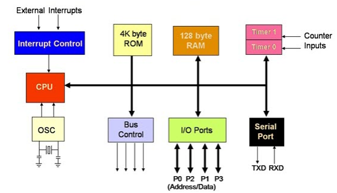

A micro controller is an integrated circuit made up of a small, limitted capability microprocceser, a small amount of memory, some ROM storage for programs, a method of managing power, a clock, and a set of input and output pins. Every time the clock ticks, a set of instructions are pulled from memory and executed. As a microcontroller typically has a very limitted set of tasks, these don't have to run instructions very fast or in large volumes, meaning their clocks cycle in the range of tens of megaherz as opposed to the average cpu's clocks in the gigaherz range. Once these instructions are run, the microcontroller will send or detect a current through its input and output pins. These currents, or signals, are either digital (binary, 0 or 1, HIGH or LOW) or analog (range of values, usually 0, 255 or 0, 1023). As currents are constantly being passed through the microcontroller, they have to have robust power management systems, being able to dish out some respectable currents for how small their chips are, although overdoing it can cause damage - for this reason many microcontrollers include an internal programmable pull-up resistor, allowing a developer to dynamically assign resistance to designated pins.
As far as the average joe is concerned, there are two types of microcontrollers people work with outside of the industrial environment. Those are the Arduino and the ESP-32 and their constituent spin-offs. The arduino is an Italian line of simplified microcontrollers using mostly Texas Instruments proccesors. They are versatile as far as microcontroller design goes, and are a great learning point due to the high feature development kit most models come with and simple input/output system with plentiful documentation. The ESP-32 a more resent microcontroller developed by a company called Espressif, and is somewhat more advanced, boasting features more comparable to that of a full computer at times, if not one from 20-30 years ago. Some newer ESP-32 models even include multiple cores and threads, a feature unusual in microcontrollers due to their specialized nature. The Arduino is programmed in its own C-like language, while the more general purpose ESP-32 is programmed in a variety of languaes from C++ to XML. Some notable spin-off/alternative boards include the seeed-studio lineup, which boast a variety of proccesers on incredibly small form factor chips, and the Raspberry-pi pico, the raspberry pi companies entry in to the microcontroller market with their RP2040 microproccesor. Pictured to the left are two pin-out diagrams of an Arduino Uno and ESP-32 development kit. These display the functionality of each pin on the board, and are frequently used when working with them.